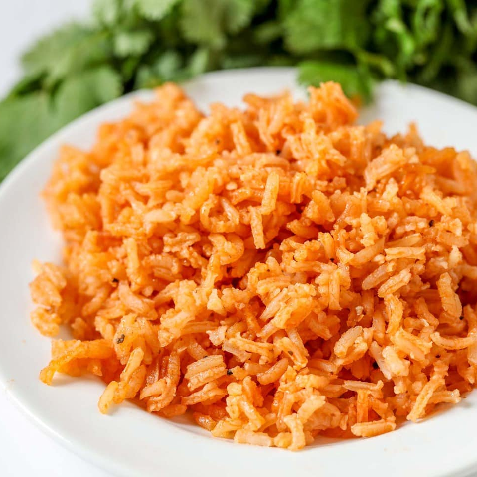

Spanish Rice

Description
Also known as Mexican rice, this side dish is the perfect companion to, as the other name implies, Mexican food. This restaurant-style rice is exactly what is needed with your tacos to make a truly great Mexican meal!
Ingredients
- 2 cups long grain rice
- 1/8 cup vegetable oil
- 8 ounces tomato sauce
- 6 stems cilantro
- 1 tsp salt
- 1 tsp minced garlic
- 4 cups water
- 1 cube chicken flavored bouillon
- dash cumin
- dash garlic pepper
Steps
- Heat oil in large frying pan on medium heat.
- Add rice and cook until golden brown.
- Add 1 chicken flavored bouillon cube to 4 cups water and microwave for 3 minutes.
- When rice is brown, add water, tomato sauce, salt, garlic, cumin and garlic pepper to pan.
- Stir and cover pan. Let simmer for 30-40 minutes or until all is cooked and there is no liquid left. Fluff before serving.
Return to home